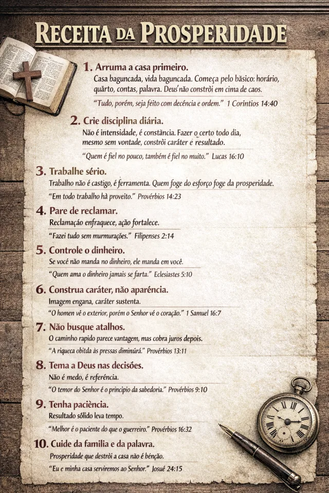
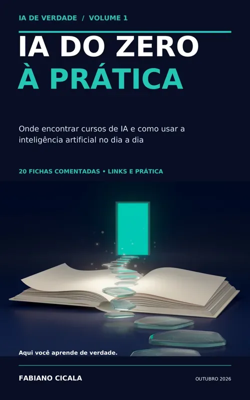
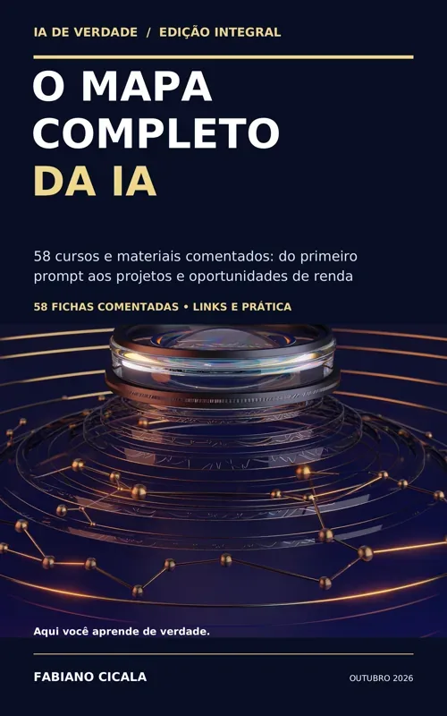
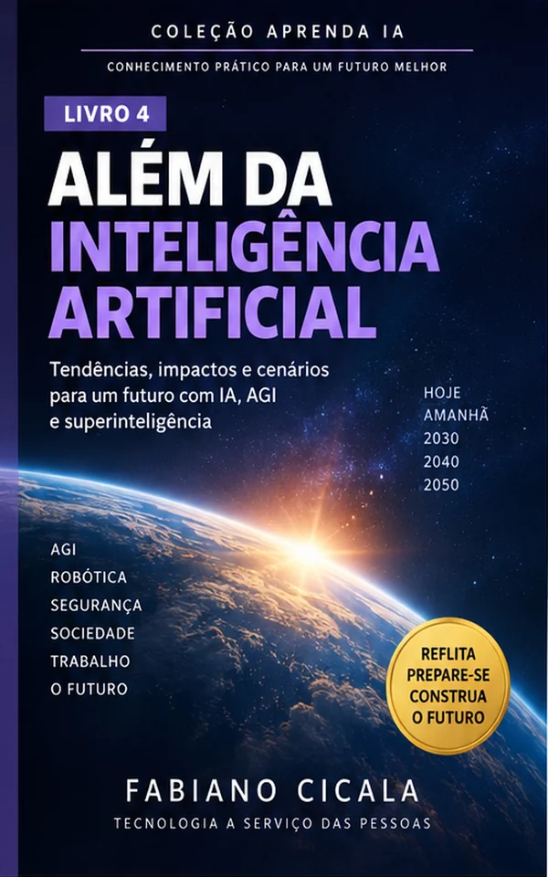
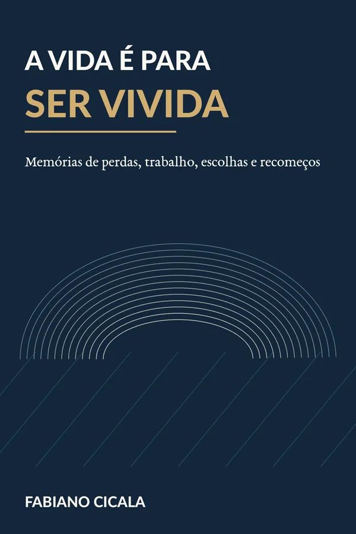
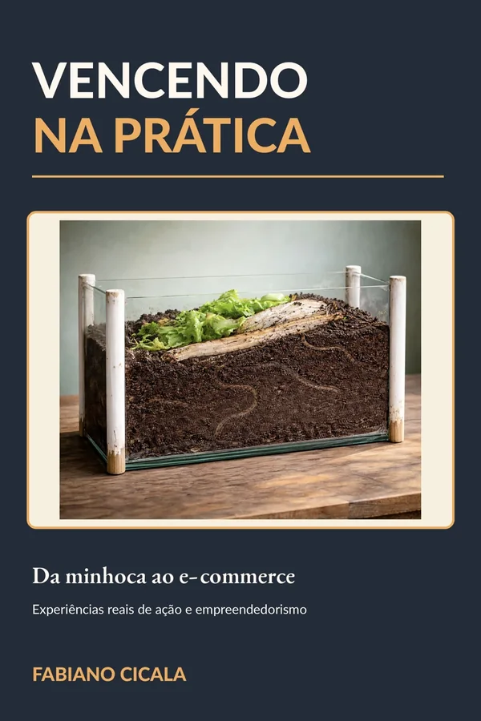
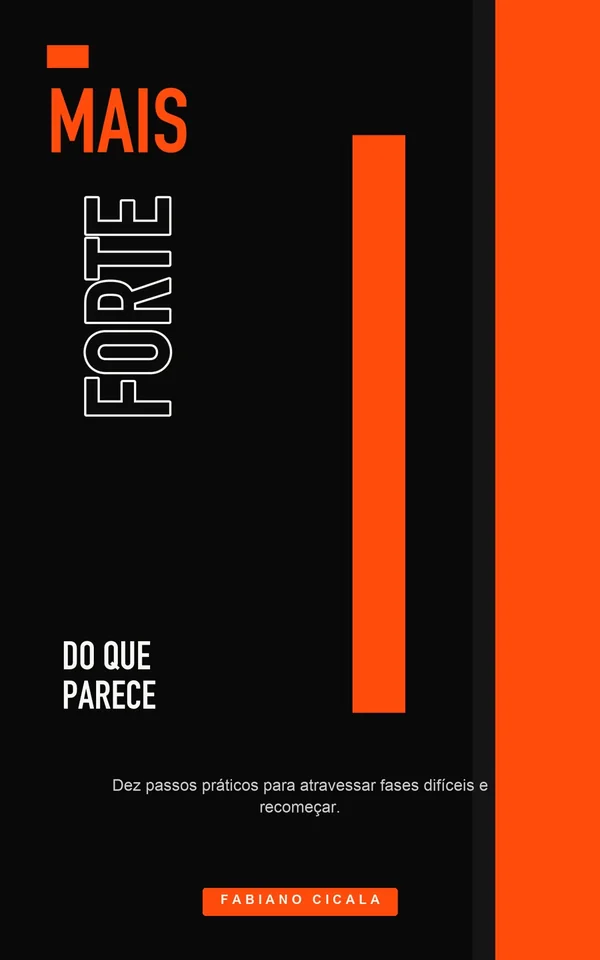
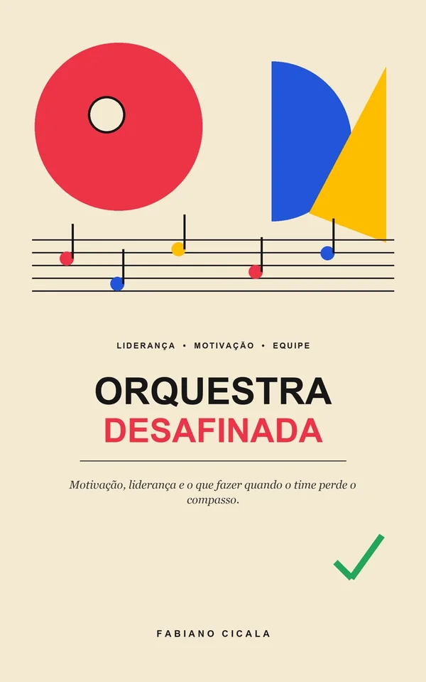
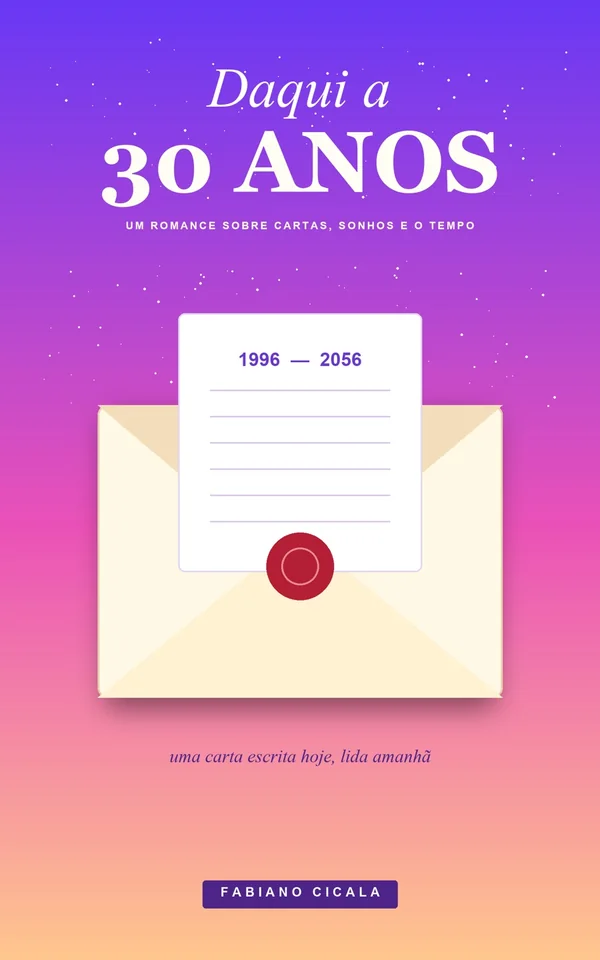
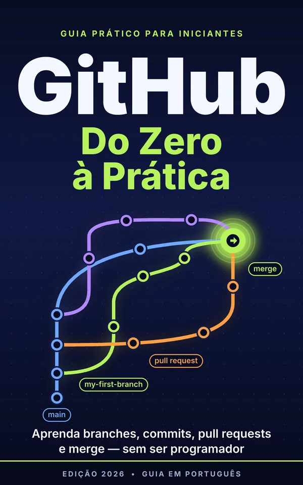

Teste antes de importar
Como definir critérios de aprovação, avaliar uma amostra e calcular o custo de um lote utilizável.
Ler artigo →Conteúdos
Não escrevo para agradar. Escrevo para ser verdadeiro.
Artigos
Guias com perguntas, exercícios e exemplos hipotéticos para aplicar ao trabalho.
Como definir critérios de aprovação, avaliar uma amostra e calcular o custo de um lote utilizável.
Ler artigo →Como conferir fontes, testar aplicações e manter a aprovação humana nas decisões.
Ler artigo →Como registrar aprendizados e criar critérios que uma equipe consegue verificar e aplicar.
Ler artigo →Livros
23 obras e projetos editoriais

Liderança, fé e propósito no comando silencioso.
Conhecer livro →
Uma reflexão sobre excelência, inquietação e o que realmente importa.
Conhecer livro →
50 prompts para rir, se surpreender e explorar a inteligência artificial.
Conhecer livro →
Tecnologia, escolhas e o valor do ser humano.
Conhecer livro →Uma história distópica sobre identidade e tecnologia.
Conhecer livro → Assistir ao teaser →
Um devocional sobre posicionamento, fé e perseverança.
Conhecer livro →

Introdução à inteligência artificial aplicada ao dia a dia.
Conhecer livro →
Aprofundando a aplicação prática da inteligência artificial.
Conhecer livro →
Uma visão organizada dos caminhos da inteligência artificial.
Conhecer livro →
O quarto volume da Coleção Aprenda IA amplia a reflexão para além do uso imediato das ferramentas.
Conhecer livro →

Aplicações da inteligência artificial ao trabalho.
Conhecer livro →
Da minha roça ao e-commerce: experiências reais de ação e empreendedorismo.
Conhecer livro →
Dez passos práticos para atravessar fases difíceis e recomeçar.
Conhecer livro →
Motivação, liderança e o que fazer quando o time perde o compasso.
Conhecer livro →Dez virtudes de 1 Coríntios 13 para líderes que querem ser lembrados com gratidão.
Conhecer livro →O enigma do XIII: o papel de Judas no cumprimento das Escrituras, a partir da tradução de 2006 do Evangelho de Judas.
Conhecer livro →
Um romance sobre cartas, sonhos e o tempo: crianças escrevem cartas para si mesmas e as guardam sob uma árvore.
Conhecer livro →
Guia prático para iniciantes: branches, commits, pull requests e merge, sem ser programador.
Conhecer livro →Nenhum livro encontrado.
Vídeos
Teasers e conversas no canal oficial.
Conversas sobre negócios, produtos, vendas e tecnologia.
Acessar o canal →